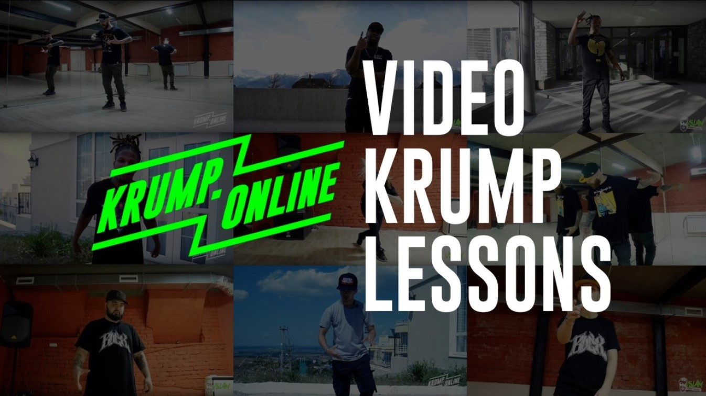
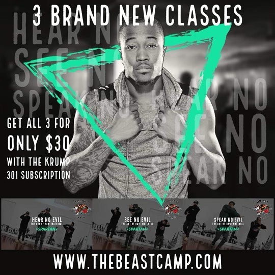

Si siempre quisiste aprender el estilo y nunca supiste por donde empezar, esta seccion va poder solucionar todos tus problemas!
En los siguientes enlaces, podras acceder a diferentes sitios de clases Online, para que puedas aprender el estilo desde cualquier lugar del mundo y sin ningun problema!!

BEASTCAMP - Clases con los mejores exponentes
Krump Foundation, a cargo de Jaja Vankova
KRUMP Online, a cargo de JSlam
STEEZY - Plataforma de muchos estilos de danza